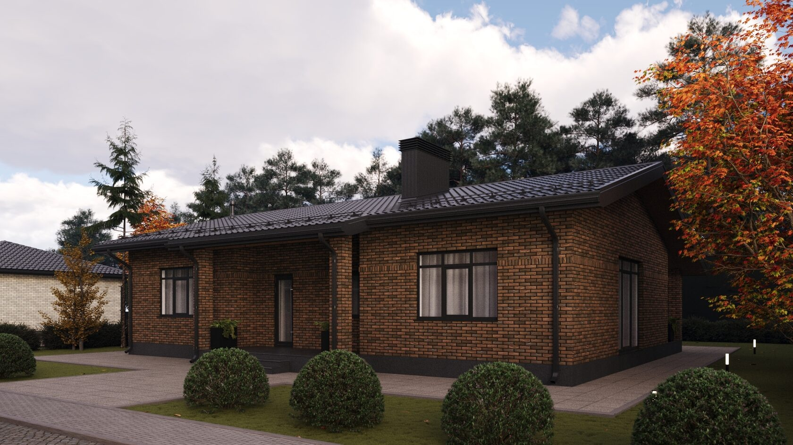
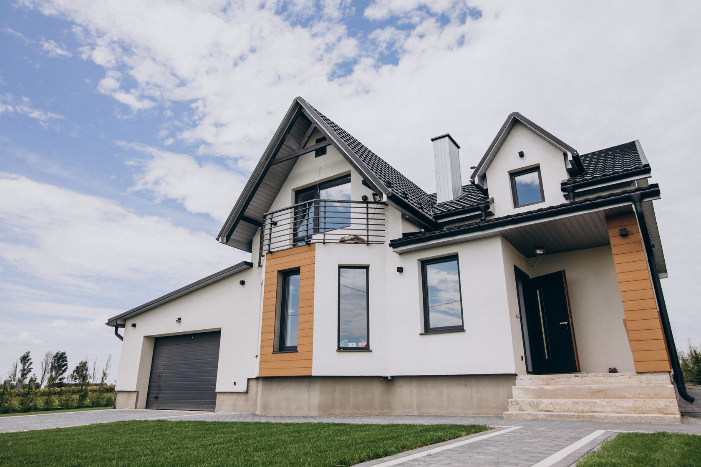

СК-Застройщик
Загородный дом.
Под ваши планы.
Проектирование и строительство домов. Выберите близкую архитектуру и обсудите планировку и комплектацию своего проекта.
Посмотреть домаПРИМЕРЫ РЕШЕНИЙ
Посмотрите дома.
Обсудим ваш проект.
Одноэтажный дом или более просторный коттедж. Посмотрите примеры и обсудите архитектуру, планировку и состав строительных работ.

Двухэтажный дом
СК-Застройщик ·
Двухэтажный дом
Одноэтажный дом или более просторный коттедж. Посмотрите примеры и обсудите архитектуру, планировку и состав строительных работ.
Обсудить строительство